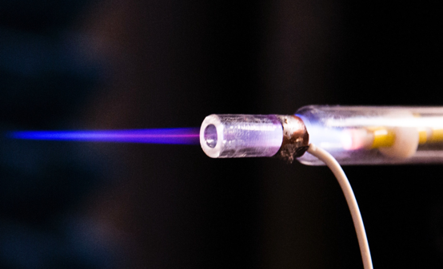

One of mankind’s greatest medical challenges is the treatment of cancer, particularly brain cancer. Human brains are protected by the blood-brain barrier, a layer of tightly packed cells that prevents viruses and toxins in the bloodstream from harming the brain. Some chemotherapy drugs cannot pass through the blood-brain barrier, making the treatment of brain cancer even more difficult than more common cancers.
The pioneering work by Dr. Michael Keidar of the George Washington University in developing cold plasma technology has shown great promise in killing brain cancer glioma cells while not harming healthy brain cells. The work of Dr. Keidar and his graduate students has attracted considerable international attention.
“Plasma is ionized gas that contains charged particles and is typically extremely hot. Cold plasma’s heavy particles—molecules, atoms and ions— are at room temperature and safe to touch. Cold plasma is made through a process that doesn’t give it enough time to get hot” according to Dr. Keidar.
Last September, the George Washington University signed a $5.3 million corporate research sponsorship agreement with the Maryland-based US Patent Innovations, LLC (USPI) that will fund a new initiative to further develop biomedical applications for cold plasma technology in cancer treatment.
The funding from USPI will enable the School of Engineering and Applied Science’s Professor Michael Keidar to expand his research in this rapidly emerging field. Studies have shown that cold atmospheric plasma technology can be used to target cancerous cells without harming normal biological tissue, a finding that could revolutionize cancer treatment.
See Dr Keidar’s explanation here.
This extremely innovative development will get a significant boost from the USPI funding and should lead to an application for an FDA investigational device exemption to start clinical trials on the cold plasma medical device later in 2018.
This significant innovation looks like a paradigm changer to me.
What do you think?